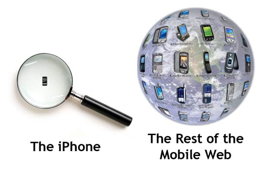

Bi-weekly web magazine A List Apart (ALA) launched two fresh new articles. Unfortunately I was saddened that Erin Kissane, editor at ALA, approved an entire article about designing specifically for the iPhone. I know the iPhone is amazing to many geeks out there but it is no where near as prevalent as the number of web enabled mobile devices.
According to market researcher iSuppli, the number of mobile phone subscribers topped 2.6 billion globally last year. Since I couldn’t find any statistics on mobile web devices, let us assume only a quarter of those can access the web on their phone. That works out to 650 million potential mobile web users. Apple reported it sold 270,000 iPhones over it’s launch weekend but let’s assume they sold 30,000 more shiny devices between now and then. Using the above statistics, the iPhone accounts for only 0.046% of all web-accessible mobile devices; a drop in the proverbial bucket. And I am supposed to be excited to specifically tweak my site for it?

The web design world has standards with the goal of being able to code once and access the content in any browser or on any device. Standards arose because in the late 90’s and early 2000 websites were often designed for one browser at a certain resolution. You may remember seeing such terms as “Best viewed in Internet Explorer 5+ with a resolution of 1024×768.” One of the founders of the web, Tim Berners-Lee, even expressed his displeasure of the trend in Technology Review (July 1996):
“Anyone who slaps a ‘this page is best viewed with Browser X’ label on a Web page appears to be yearning for the bad old days, before the Web, when you had very little chance of reading a document written on another computer, another word processor, or another network.”
By designing for a single device, you are essentially jumping back to the dark ages of the web while cutting out a large chunk of the global audience. I agree that mobile web standards leave a lot to be desired but by essentially ignoring the rest of the world (remember iPhones are U.S. only for now) you are only making things worse.
Web technologies like Apple’s mobile Safari and Microsoft’s Deepfish show great promise in fulfilling the web standard utopia. These tools don’t require separate coding for mobile devices which in turn will speed up the adoption of the Internet on-the-go. But it will be several more years before they are in a majority of devices and until then we have to remember that there are other phones out there other than Apple’s precious iPhone.